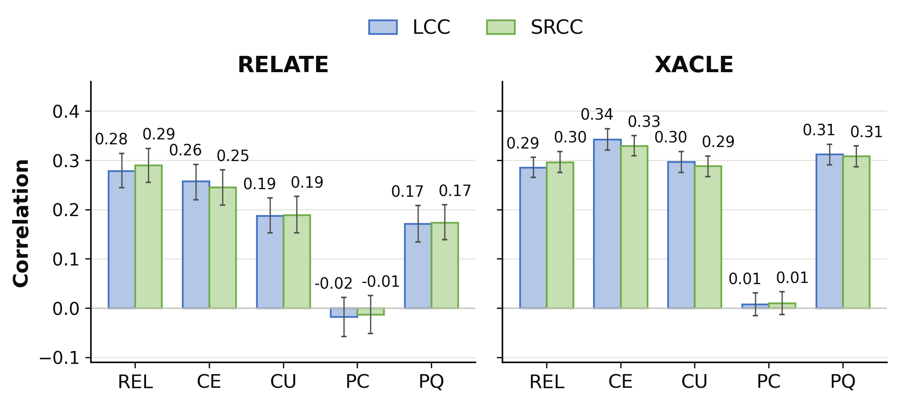
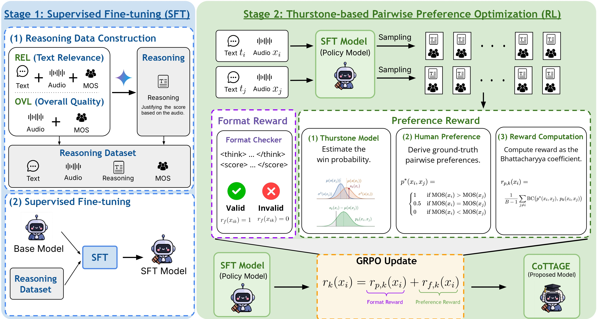

Abstract
Rapid progress in text-to-audio (TTA) generation demands reliable and explainable automatic evaluation. However, existing metrics fail to simultaneously deliver high correlation with human judgments and meaningful, audio-grounded explanations, forcing reliance on labor-intensive human evaluation that bottlenecks model development iteration. To address this, we propose CoTTAGE, a reasoning-based evaluator for text relevance (REL) and audio quality (OVL). Following a reason-then-predict paradigm, CoTTAGE first generates an audio-grounded rationale to diagnose errors before predicting scores. Supported by over 10K newly collected human OVL annotations, CoTTAGE is first trained via supervised fine-tuning and then refined with reinforcement learning using a Thurstone-based preference objective that converts sampled score distributions into pairwise preference probabilities and rewards agreement with rankings derived from human judgments. Across six benchmarks spanning REL and OVL, CoTTAGE achieves state-of-the-art correlation with human judgments while producing human-preferred explanations to accelerate TTA development.
The audio describes a motor that starts loudly, then slows down and eventually stops. The text also describes a motor that begins to pick up speed, then cuts out and slowly stops. The key elements of the motor's behavior (starting loudly, slowing down, and stopping) are consistent between the audio and the text.
Listening to the audio, there is a continuous, loud humming or buzzing sound that resembles a motor or drone. However, the audio remains at a constant, steady pitch and intensity from the beginning to the end. It completely lacks the dynamic changes requested in the prompt: there is no sense of the motor “picking up speed,” nor is there a sudden “cutting out” or stopping sound. Therefore, the alignment between the text and the audio is very poor.
Our Audio OVL Annotations
RELATE and XACLE provide training-scale human annotations for text relevance, but public human labels for overall quality on synthesized audio are limited to small, evaluation-oriented test sets. We therefore collect OVL ratings for 10,362 training clips (2,862 from RELATE and 7,500 from XACLE) via Amazon Mechanical Turk, with five independent ratings per clip.
We compare the mean human OVL rating against human REL annotations and the four aesthetic dimensions predicted by Audiobox-Aesthetics (PQ, PC, CE, CU). REL correlates only weakly with OVL — a clip that faithfully matches its prompt is not necessarily perceived as high quality, and vice versa. Production Complexity is essentially uncorrelated, and Production Quality, despite being nominally the closest concept, reaches only a moderate correlation. No existing signal correlates with human OVL beyond LCC = 0.34. These results indicate that REL annotations and existing aesthetic predictors are not sufficient for OVL evaluation. Our annotations provide dedicated OVL supervision for training an OVL judge.

Pearson (LCC) and Spearman (SRCC) correlations between human OVL ratings and existing evaluation dimensions, including REL and the four Audiobox-Aesthetics dimensions. Error bars indicate bootstrap 95% confidence intervals.
Method
CoTTAGE is trained in two stages. Supervised fine-tuning establishes the reason-then-predict behaviour from rationales that are anchored to human MOS. Reinforcement learning then adds comparative supervision: instead of a single pointwise target per sample, each sample is scored against the other samples in the batch through an uncertainty-aware Thurstone preference model.

The overall training pipeline of CoTTAGE.
Main Results
We report Pearson (LCC) and Spearman (SRCC) correlations with human ratings on the official RELATE and XACLE test sets (in-domain) and on PAM-Audio and Clotho (out-of-domain, with different annotator pools and collection protocols). CoTTAGE obtains the highest LCC and SRCC on all benchmarks for both dimensions. Comparing with the supervised-only variant (w/o RL), the results also show consistent gains from the RL stages.
Text relevance (REL) leaderboard
| Model | Reasoning | XACLE | RELATE | PAM-Audio | Clotho | Avg | |||||
|---|---|---|---|---|---|---|---|---|---|---|---|
| LCC ↑ | SRCC ↑ | LCC ↑ | SRCC ↑ | LCC ↑ | SRCC ↑ | LCC ↑ | SRCC ↑ | LCC ↑ | SRCC ↑ | ||
| CoTTAGE (ours) 🥇 | 0.685 | 0.652 | 0.594 | 0.591 | 0.657 | 0.663 | 0.607 | 0.602 | 0.636 | 0.627 | |
| CoTTAGE w/o RL (SFT only) 🥈 | 0.601 | 0.572 | 0.519 | 0.516 | 0.606 | 0.590 | 0.536 | 0.531 | 0.566 | 0.552 | |
| Gemini-3.1 Pro 🥉 | 0.551 | 0.489 | 0.471 | 0.423 | 0.473 | 0.442 | 0.548 | 0.528 | 0.511 | 0.471 | |
| CLAPScore | 0.472 | 0.398 | 0.437 | 0.411 | 0.493 | 0.488 | 0.396 | 0.378 | 0.450 | 0.419 | |
| ELSA | 0.398 | 0.371 | 0.375 | 0.377 | 0.497 | 0.467 | 0.416 | 0.404 | 0.422 | 0.405 | |
| Qwen3-Omni-30B | 0.399 | 0.374 | 0.256 | 0.256 | 0.373 | 0.353 | 0.438 | 0.444 | 0.367 | 0.357 | |
| Audio Flamingo 3 | 0.344 | 0.300 | 0.215 | 0.193 | 0.297 | 0.230 | 0.376 | 0.339 | 0.308 | 0.266 | |
| Qwen2.5-Omni-7B | 0.162 | 0.153 | 0.063 | 0.047 | 0.319 | 0.305 | 0.334 | 0.301 | 0.220 | 0.202 | |
Rows are sorted by the average LCC across the benchmarks; Avg is the unweighted mean over the test sets shown. 🥇🥈🥉 mark the top three. Reasoning: whether the judge produces a natural-language rationale for its score () or only a scalar ().
Overall audio quality (OVL) leaderboard
| Model | Reasoning | PAM-Audio | Clotho | Avg | |||
|---|---|---|---|---|---|---|---|
| LCC ↑ | SRCC ↑ | LCC ↑ | SRCC ↑ | LCC ↑ | SRCC ↑ | ||
| CoTTAGE (ours) 🥇 | 0.611 | 0.614 | 0.559 | 0.558 | 0.585 | 0.586 | |
| PAM 🥈 | 0.587 | 0.610 | 0.445 | 0.451 | 0.516 | 0.531 | |
| CoTTAGE w/o RL (SFT only) 🥉 | 0.529 | 0.525 | 0.481 | 0.470 | 0.505 | 0.498 | |
| Gemini-3.1 Pro | 0.404 | 0.473 | 0.512 | 0.502 | 0.458 | 0.488 | |
| Aesthetics-CU | 0.396 | 0.405 | 0.487 | 0.471 | 0.442 | 0.438 | |
| Aesthetics-PQ | 0.355 | 0.363 | 0.465 | 0.450 | 0.410 | 0.407 | |
| Aesthetics-CE | 0.464 | 0.502 | 0.317 | 0.340 | 0.391 | 0.421 | |
| ELSA | 0.387 | 0.363 | 0.305 | 0.283 | 0.346 | 0.323 | |
| Qwen3-Omni-30B | 0.429 | 0.424 | 0.252 | 0.227 | 0.341 | 0.326 | |
| CLAPScore | 0.379 | 0.373 | 0.201 | 0.223 | 0.290 | 0.298 | |
| Audio Flamingo 3 | 0.326 | 0.332 | 0.218 | 0.225 | 0.272 | 0.279 | |
| Qwen2.5-Omni-7B | 0.221 | 0.206 | 0.271 | 0.329 | 0.246 | 0.268 | |
| Aesthetics-PC | 0.092 | 0.127 | −0.148 | −0.074 | −0.028 | 0.027 | |
Rows are sorted by the average LCC across the benchmarks; Avg is the unweighted mean over the test sets shown. 🥇🥈🥉 mark the top three. Reasoning: whether the judge produces a natural-language rationale for its score () or only a scalar ().
Qualitative Results
Green indicates claims supported by the audio, while red marks unsupported claims. Rationales are abbreviated.
Reasoning on REL
The audio contains a continuous sound of a bug chirping, which aligns with the description of a bug chirping repetitively. The description does not mention the bug chirping once before starting to chirp repetitively, but the continuous chirping is consistent with the description of repetitive chirping. Therefore, the audio aligns well with the text description.
The text instruction specifies a bug chirping once initially, followed by repetitive chirping. The audio, however, consists of a continuous, repetitive bug chirping from the very beginning. It completely misses the initial “chirp once” action and plays the repetitive sound throughout its duration. Because the temporal structure and the distinct events described in the prompt are absent, the audio fails to faithfully represent the instruction.
The audio contains the sound of ducks quacking, which aligns with the text description. The presence of wind and faint splashes also suggests an outdoor setting, which is consistent with the idea of ducks in a natural environment. The audio captures the essence of the described scene, making the semantic alignment quite strong.
The text instruction specifies three distinct elements: ducks quacking, blowing wind, and faint splashes. Listening to the audio, the sound of ducks quacking is very prominent and clearly recognizable throughout the clip. However, the other elements described in the prompt are noticeably absent. There is no audible sound of blowing wind, nor are there any faint splashes to be heard. Because the audio captures the primary subject but completely misses the background environmental sounds, it only partially fulfills the text instruction.
Reasoning on OVL
The audio clip contains a series of gunshots followed by a man speaking. The gunshots are clear and distinct, indicating a high-quality sound effect. The man's speech is also clear and understandable, suggesting good audio quality. There is no background noise or unnatural sound patterns present. The overall audio quality is consistent with a real-world recording.
The audio clip suffers from severe quality degradations throughout its duration. The prominent sounds, which resemble loud bursts or synthetic impacts, are heavily distorted and clipped, resulting in a harsh, abrasive, and unnatural tone. Additionally, there is a pervasive layer of background noise and static that further muddies the audio. The human voices heard towards the end are muffled, lack definition, and are difficult to discern clearly against the noisy background.
The audio clip contains a sound that resembles a vehicle engine idling, which is a common and recognizable sound in real-world recordings. The sound is clear and consistent, without any noticeable background noise or unnatural patterns. The quality of the audio is high, as it accurately represents the sound of an engine idling. Therefore, the audio quality is excellent.
The audio presents a continuous mechanical sound, resembling a small engine or motor running. The most prominent issue with this recording is the significant amount of background noise and static. A persistent hiss and low-frequency rumble are present throughout the entire clip, which masks the finer details of the mechanical sound. Additionally, the audio feels somewhat muffled and lacks high-frequency clarity, giving it a slightly distant or enclosed characteristic.
The audio clip contains a baby crying, which is a natural sound. However, the quality of the audio seems to be low, with some background noise and possibly some unnatural sound patterns. The audio does not sound like a high-quality real-world recording.
The audio presents a baby crying, which is the primary sound source. The crying itself is captured with good clarity and sounds very natural, without any noticeable distortion, clipping, or digital artifacts. The vocalizations are distinct and easy to hear. However, there is a minor amount of background noise or room ambiance present throughout the recording. While this background noise is not overly intrusive, it prevents the audio from sounding completely pristine or studio-quality.
BibTeX
@misc{lin2026cottage,
title={CoTTAGE: An Explainable Judge for Text-to-Audio Generation},
author={Yu-Xiang Lin and Yun-Man Hsu and Bo-Ru Lu and Kuan-Po Huang and Wenze Ren and Ming-To Chuang and Chun-Yi Kuan and Jiawei Du and Byeonggeun Kim and Qingming Tang and Chieh-Chi Kao and Ankur Gandhe and Chao Wang and Hung-yi Lee},
year={2026},
eprint={2611.17644},
archivePrefix={arXiv},
primaryClass={cs.SD},
url={https://arxiv.org/abs/2611.17644},
}